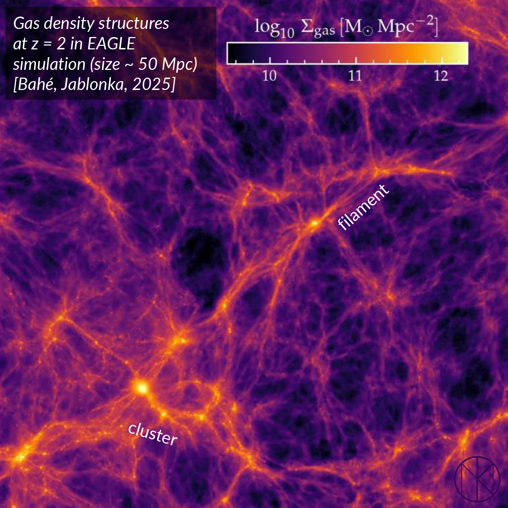
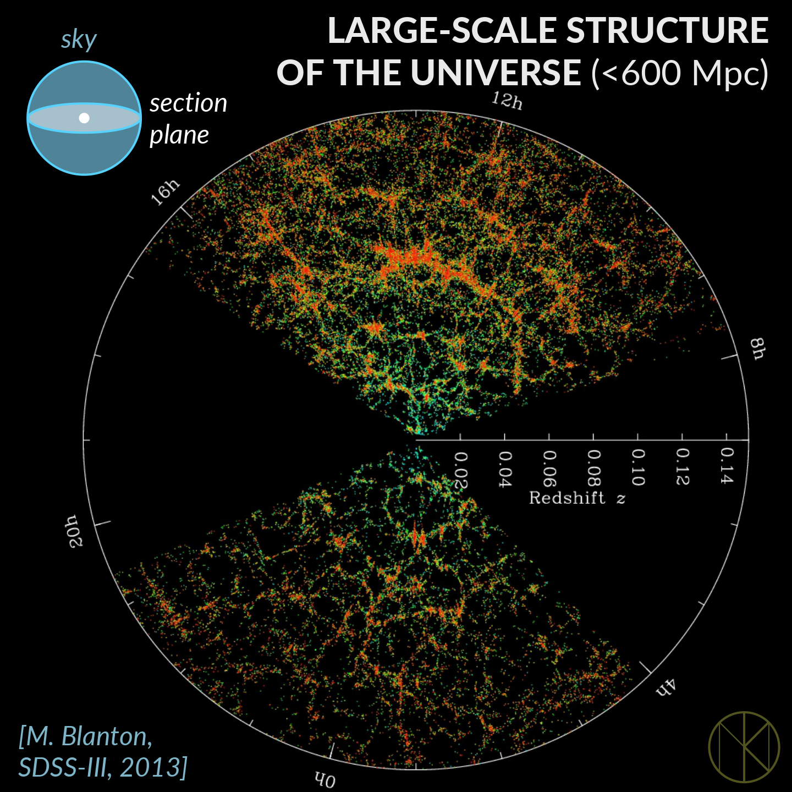
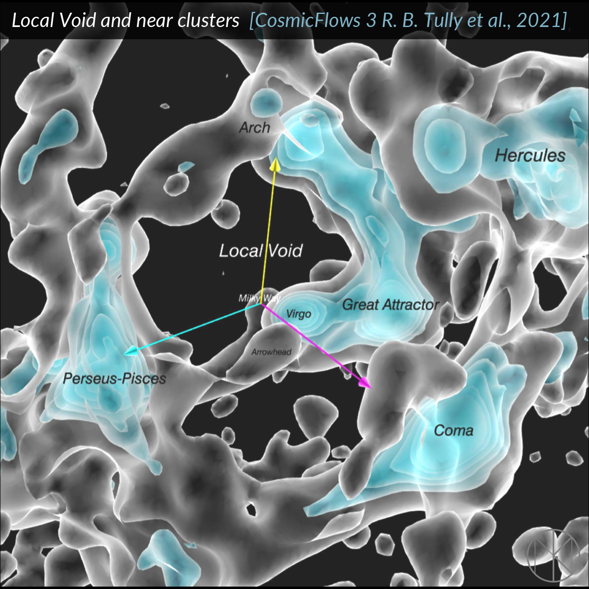
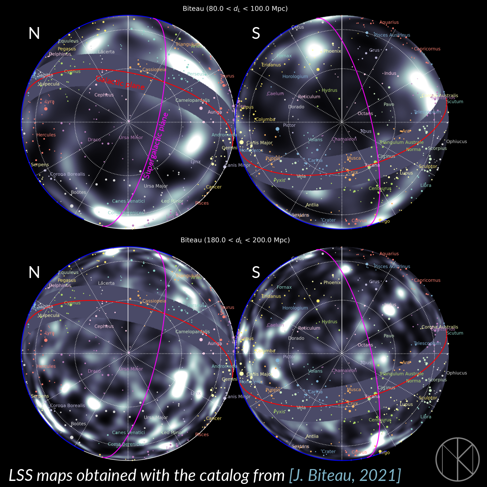
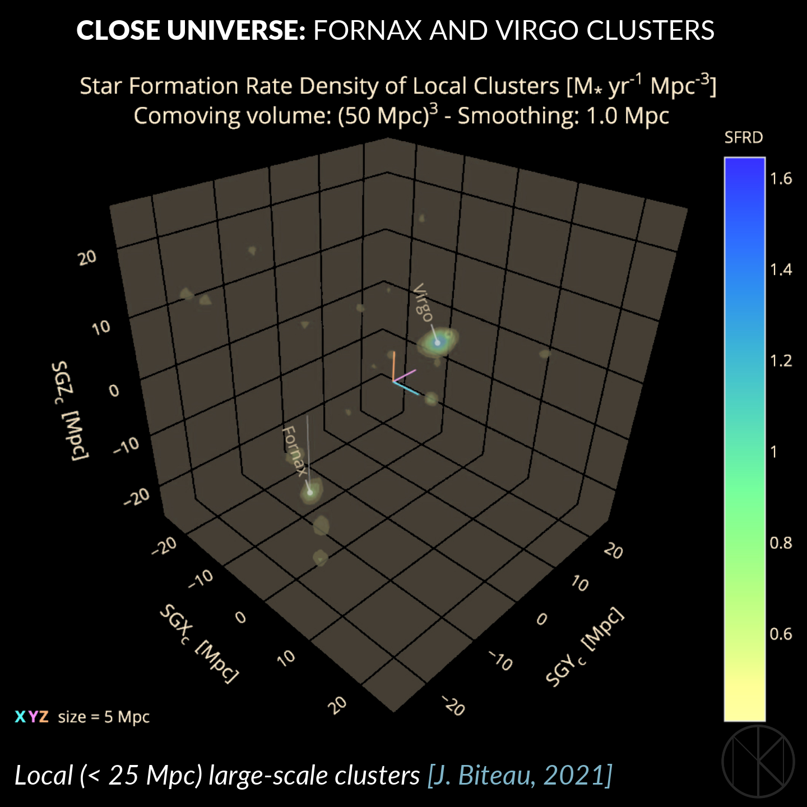
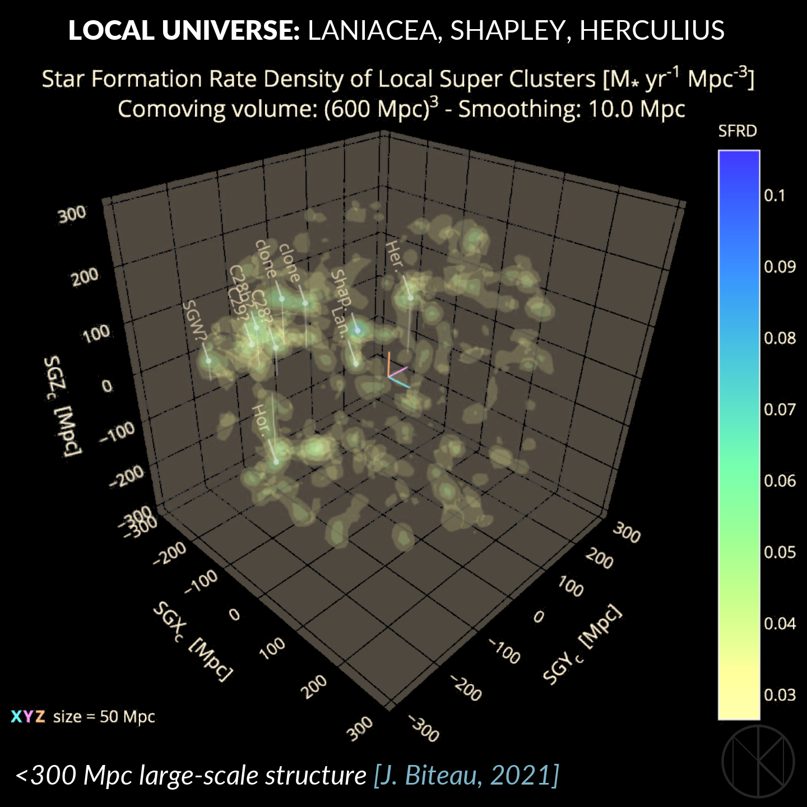

The Age of (Cosmological) Exploration
4 July 2026
No Blank Spots Left on the Map?
The discovery of the Americas by Columbus (1492), the sea route around Africa to India by da Gama (1498), Australia by Janszoon (1606) and Houtman (1619), and finally Antarctica by Lazarev, Bellingshausen, and independently Bransfield (1820) completed the map of our planet. Today, satellite systems acquire images of Earth every day with resolutions of just a few tens of centimeters. The Age of Discovery has come to an end, and the physical geography of Earth is, for the most part, complete.
The rapid development of space exploration during the second half of the twentieth century made it possible to produce detailed maps of the planets of the Solar System. Maps of Mercury, Venus, and Mars are now publicly available with resolutions of just a few tens of meters — simply open Google Maps, for example. The same platform also allows you to explore maps of the Moon and the moons of Jupiter and Saturn. Today, it is virtually impossible to give a name to a newly discovered surface feature on any planet in the Solar System: they have been explored in remarkable detail.
The Structure of the Universe
And yet, one field still preserves the romance of exploring uncharted territory: mapping the Universe.
A revolution in our understanding of the cosmos took place during the first third of the twentieth century. It was then that astronomers became convinced that the Milky Way is an ordinary galaxy, no different from countless others. As astronomical instruments improved, progressively fainter and more distant galaxies came within reach of observation. Today, dedicated sky surveys such as SDSS and DESI collect data on tens of millions of galaxies, providing the foundation for mapping the Universe.
In the expanding Universe, galaxies are not distributed at random. Under the influence of gravity, they form large-scale structures: galaxy clusters, superclusters, and filaments. Beautiful visualizations of these structures are routinely produced by cosmological simulations.
{kind=link}

Searching for and studying these structures is, in some sense, similar to mapping mountain ranges on Earth. There is, however, one important difference. A map of our planet is two-dimensional—it describes the surface of a sphere. A map of the local Universe is inherently three-dimensional: besides north, south, east, and west, we must also determine the distance to every object. Consequently, astronomers usually present slices or projections through the cosmic volume.
{kind=link}

How Do We Map the Universe?
Producing a map of the large-scale structure of the Universe requires much more than taking a high-quality image. The distance to every galaxy must also be measured. The most widely used method relies on determining a galaxy's redshift.
Every chemical element possesses its own unique pattern of spectral lines. Modern telescopes record the spectrum of an individual galaxy and identify these characteristic features. Because galaxies recede as the Universe expands, their spectra are shifted toward longer wavelengths — the red end of the spectrum. Repeating this procedure for millions of galaxies allows astronomers to reconstruct their three-dimensional distribution and build a map of the cosmic web.
The Local Universe
The first map shows the three-dimensional structure of our cosmic neighborhood. The Milky Way belongs to the Local Group, which is itself associated with the Virgo Supercluster. A substantial fraction of the nearby Universe is occupied by the Local Void—a vast region containing remarkably few galaxies.
{kind=link}

The second image presents the large-scale structure projected onto the celestial sphere at fixed distances from Earth. The upper row corresponds to approximately 90 Mpc (300 million light-years), while the lower row shows structures around 190 Mpc (620 million light-years).
{kind=link}

Interactive Exploration
During my own research on the large-scale structure of the Universe, I produced several interactive three-dimensional visualizations. Modern galaxy catalogs describe nearby structures—such as the Virgo Supercluster and the Local Void—with reasonable accuracy. At larger distances, however, uncertainties in galaxy distance measurements still limit our ability to reconstruct the local cosmic web unambiguously.
{kind=link}

{kind=link}

You can explore the interactive 3D maps yourself using the link.
References
[1] Y. Bahé, P. Yablonka. Galaxies in the Simulated Cosmic Web: I. Filament Identification and Their Properties. (2025) 10.1051/0004-6361/202554079[2] R. B. Tully et al. Cosmicflows-3: Cosmography of the Local Void. (2019) 10.3847/1538-4357/ab2597
[3] J. Biteau. Stellar Mass and Star Formation Rate within a Billion Light-years. (2021) 10.3847/1538-4365/ac09f5
[4] Y. Li, G. R. Farrar. How Well Is the Local Large-Scale Structure of the Universe Known? (2026) 10.48550/arXiv.2601.20808